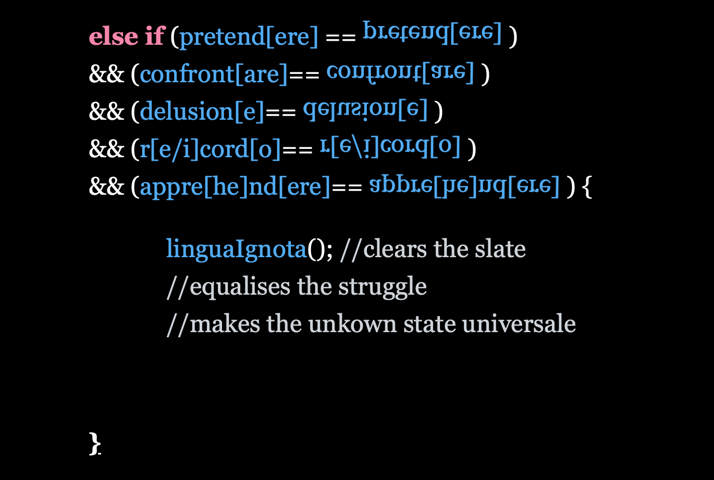

As the name might suggest, ProgramMigrating Language(pML) is a fictitious programming language conceived to express feelings of migration, movement and the linguistic shifts associated with them. Within esolangs, “multicoding” is the idea that “one text holds multiple meanings, depending on context” (Temkin, 2020). Examples of multicoding are polyglots: computer programs that can be interpreted and executed in multiple programming languages (Temkin, 2018). With ProgramMigrating Language I tried to create a polyglot code that can be read in multiple human languages instead: keywords are created in a shifting mix of Italian and English. The code can assume different meanings, based on the reader’s own interpretation and knowledge; it supports the coexistence of multiple, sometimes opposite, meanings and perspectives, while being rooted in my personal experience (reinforced by the presence of my own poetry in the comments, breaking the flow of the code). Following micha cárdenas’ example, I endeavoured to write algorithms as a representation of the moving, shifting and adjusting relationship between the complex linguistic intersections of my identity.
Components of the language
In order to convey a feeling of in-betweenness in my language I chose to include the following components:
- False friends between English and Italian: I created a list of words that sound similar in the two languages but have different meanings, so that the name of a variable could change if interpreted in English or Italian. As an Italian native speaker, I chose English false friends mistranslated into Italian, to reflect my personal struggle in learning a new language
- Square brackets were used to signify multiple readings, as is the case in Mezangelle
- A code library of made-up functions based on the literature I’ve researched for this project
- A list of variables declared at the beginning of the code
- The use of public/ private in the class definition of my variables
- Lines from my own poems as comments to the code
- A series of nested ‘if’ statements that branch out into different outcomes dictated by the different interpretations of the code. The ‘if’ statements become the guiding narrative in the interactive version of the piece.

Codework
falseFriends.cpp is a codework poem I wrote using the ProgramMigrating Language and code library and functions as a practical example of how these tools could be used. The text exists in two forms; first as a static poem and secondly as an interactive work. Based on the structure of C++ (.cpp is the source file in C++), the poem forefronts my experience and asks for witness rather than interaction, whilst the interactive work offers multiple routes through the text depending on the reader’s interpretation of English/Italian false friends and the choices they make.
The poem starts with a declaration of variables that describe different aspects of my linguistic identity. These are divided into public and private, to express the nature of those elements and to mirror the access specifiers of C++. The repetition of the specifiers and the data structures give the text a ritualistic quality. Some of the variables contain other data (e.g. the vector contains people and expectations), others are Boolean values that can only be set as true or false (e.g. movimento and shame), others are integers that can only increase or decrease (e.g. intergrazione&&assimilazione) and others are float values (e.g. English and Italiano).
The main section of the poem describes how the different variables might interact with each other and the outcome they would produce through a series of ‘if’ statements. The first statement checks if the country of birth (paeseDiNascita) is different from the country of arrival, and if the mother tongue (madreLingua) is different from the language of the country of arrival, in order to set the movement as true and start the transition into a new linguistic identity. Using the ProgramMigrating Language and code library allows for the coexistence of multiple variables using ambiguous operations that standard programming languages wouldn’t support. For example, in the following ‘if’ statement from the poem, the reader is asked to decide how to interpret the word pretend[ere]: if it’s the English ‘pretend’, which equals ‘faking’ the language of arrival is set up as English; if it’s the Italian ‘pretendere’ (‘to demand’) the language is set up as Italian. Using square brackets like in Mezangelle, the word becomes a polyglot that supports multiple languages and meanings.
If the language has been set up as English, the following ‘if’ statement asks whether this new state allows any room for the self (roomForSelf == true) or not. If the answer is yes, the outcome is the function augmentPortableSociety() inspired by Polly Barton’s writing, after Susan Ervin-Tipps (1964), in Fifty Sounds (2021). Barton explores how our ideas of who we are and who we can be are deeply entangled with the vocabulary we are offered, and the concepts derived from our linguistic community and lived experience. If moving into the space of a new language leaves room for self-expression, the result is an enrichment, an augmentation of our internal society through inhabiting a new vocabulary. If that space is lacking (roomForSelf == false), the result is a function that trades the mother tongue for the new language (barattaIdioma()), abandoning the familiar perspective in an attempt to increase the chance for integration and assimilation and stopping the in-between fluctuation altogether.
If the language has been set up as Italian, my native language, the outcome is based on whether mistranslating a false friend is experienced as a source of shame or a possibility for a new, mutable language extending across cultures. If there’s a feeling of self-betrayal deriving from mistranslating the self into a new language (selfTranslate().size() < selfBetrayal().size()) people reject this translated self (people.push_back(newSelf)) and the variable shame is set as true. If not, mistranslation is seen as an opportunity for creating different interpretations based on one’s lived experience (livedExperience.drawString("you carry your own meaning with you")) allowing for movement between languages (transHumance()) and adding layers through the exchanges, encounters and experiences contained within the language (transLate[nt]()).